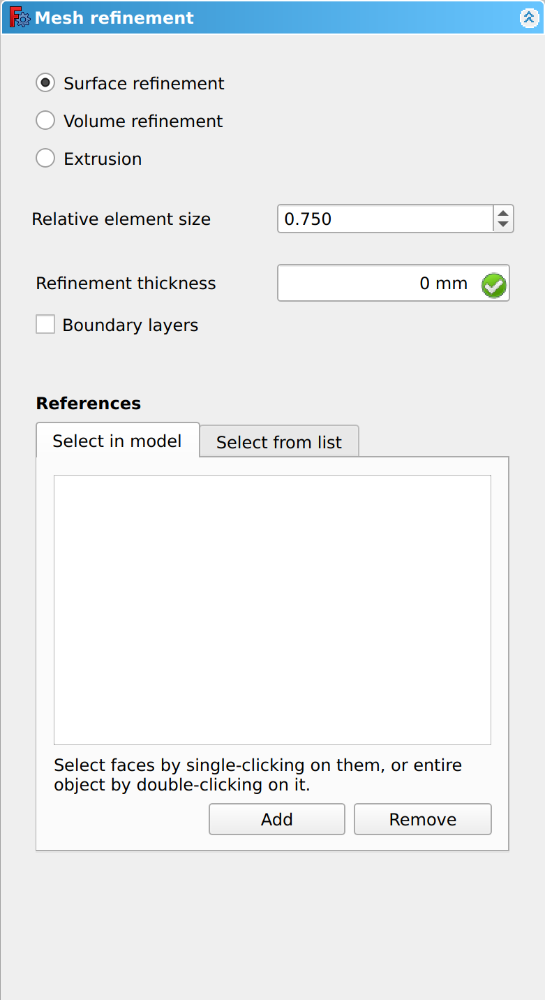
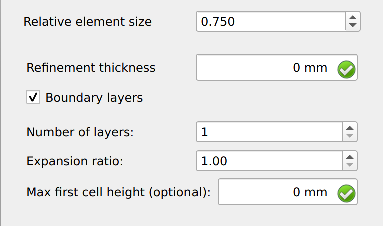
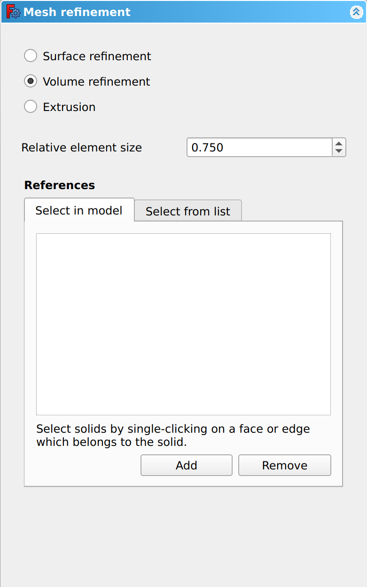
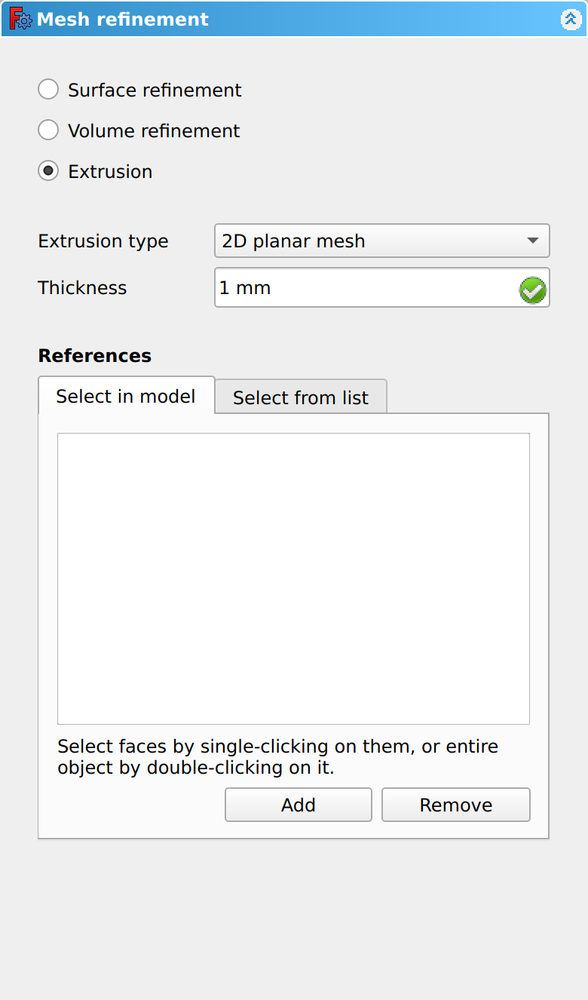
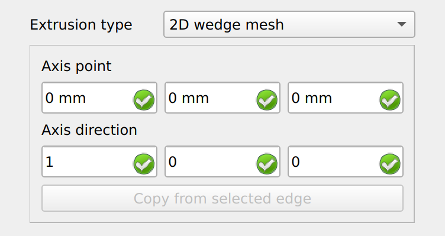
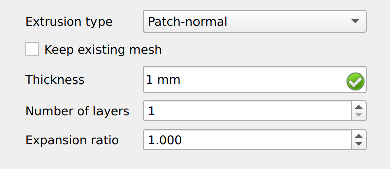
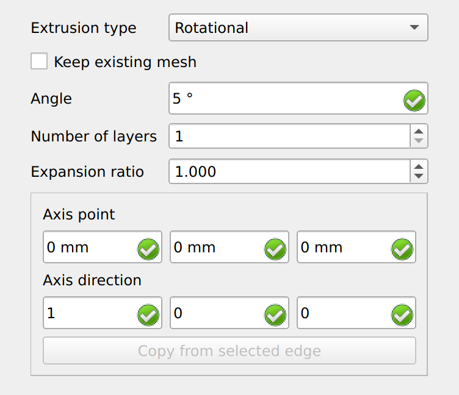

CfdOF MeshRegion/de
|
|
| Menüeintrag |
|---|
| CfdOF → Netzverfeinerung |
| Arbeitsbereich |
| CfdOF |
| Standardtastenkürzel |
| M R |
| Eingeführt in Version |
| - |
| Siehe auch |
| CfdOF NetzAusForm |
Beschreibung
Der Befehl  CfdOF Netzbereich erstellt ein Objekt, das Daten enthält, mit denen einem Hintergrundgitter Oberflächen-, Volumen- und Extrusionsverfeinerungen hinzugefügt werden können. Die Daten können in einem Aufgaben-Fenster bearbeitet werden.
CfdOF Netzbereich erstellt ein Objekt, das Daten enthält, mit denen einem Hintergrundgitter Oberflächen-, Volumen- und Extrusionsverfeinerungen hinzugefügt werden können. Die Daten können in einem Aufgaben-Fenster bearbeitet werden.
Anwendung
Ein Verfeinerungsdatenobjekt erstellen
- Ein
 [GeometryName]_Mesh-Datenobjekt in der Baumansicht auswählen.
[GeometryName]_Mesh-Datenobjekt in der Baumansicht auswählen. - Es gibt mehrere Möglichkeiten, den Befehl aufzurufen:
- Die Schaltfläche
 Netzverfeinerung drücken.
Netzverfeinerung drücken. - Aus dem Menü die Option CfdOF → Netzverfeinerung wählen.
- Die Schaltfläche
- Ein MeshRefinement-Datenobject wird zum [GeometryName]_Mesh-Datenobjekt hinzugefügt.
- Das Aufgaben-Fenster wird geöffnet. Siehe Optionen für mehr Informationen.
- Auf die Schaltfläche OK klicken, um den Befehl zu bestätigen und abzuschließen.
- Gegebenenfalls den Befehl wiederholen, um weitere Verfeinerungsdatenobjekte zum Datenobjekt [GeometryName]_Mesh hinzuzufügen.
Verfeinerungsdatenobjekt bearbeiten
- Ein MeshRefinement-Datenobjekt in der Baumansicht doppelklicken.
- Das Aufgaben-Fenster wird geöffnet. Weitere Informationen findet man unter Optionen.
- Auf die Schaltfläche OK klicken, um den Befehl zu bestätigen und abzuschließen.
Optionen
Das Aufgaben-Fenster bietet die folgenden Einstellungen:


Oberflächenverfeinerung


Volumenverfeinerung


Extrusion








Hinweise
- Menu: Analysis container, CFD mesh, Mesh refinement, Interface dynamic refinement, Shockwave dynamic refinement, Select models, Add fluid properties, Fluid boundary, Initialise, Initialisation zone, Porous zone, Mean velocity force, Reporting function, Cfd scalar transport function, Solver job control
- Erste Schritte
- Installation: Herunterladen, Windows, Linux, Mac, Zusätzliche Komponenten, Docker, AppImage, Ubuntu Snap
- Grundlagen: Über FreeCAD, Graphische Oberfläche, Mausbedienung, Auswahlmethoden, Objektname, Voreinstellungseditor, Arbeitsbereiche, Dokumentstruktur, Objekteigenschaften, FreeCAD unterstützen, Spenden
- Hilfe: Anleitungen, Videoanleitungen
- Arbeitsbereiche: Std Base, Arch, Assembly, BIM, CAM, Draft, FEM, Inspection, Material, Mesh, OpenSCAD, Part, PartDesign, Points, Reverse Engineering, Robot, Sketcher, Spreadsheet, Surface, TechDraw, Test Framework